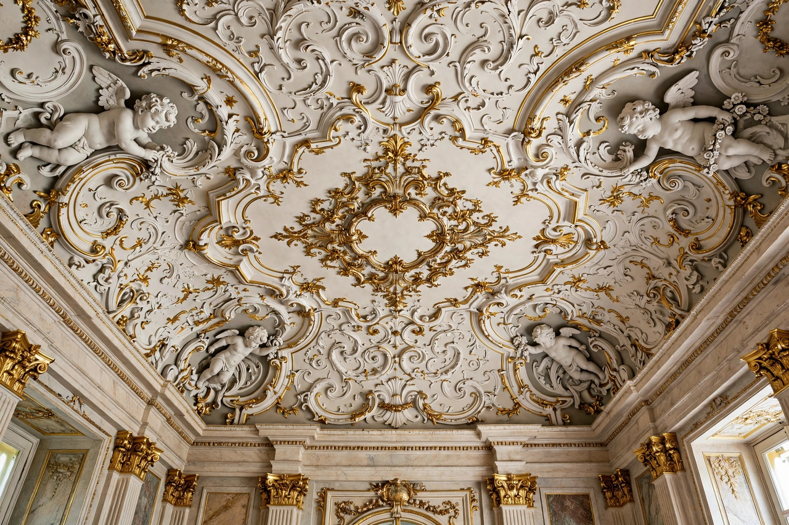

| Stucco | |
|---|---|
| Type | Construction material; decorative plaster render |
| Composition (traditional) | Lime, sand, water (later gypsum or Portland cement) |
| Uses | Exterior wall rendering, interior decoration, architectural moulding, sculpture |
| Historic centres | Renaissance and Baroque Italy; Mughal and Maya architecture |

Stucco or render is a construction material made of aggregates, a binder, and water, applied wet to walls and ceilings and hardening to a dense solid. Traditionally made of lime, sand, and water — sometimes reinforced with animal hair or straw — stucco has been used since antiquity both as a protective and decorative coating for masonry and timber buildings and as a sculptural medium in its own right. The word derives from the Italian stucco, itself from a Germanic root meaning "crust" or "coating". Related materials include plaster, mortar, and modern cement renders; in contemporary North American usage "stucco" often denotes a Portland-cement exterior finish applied over lath.
Lime plaster coatings appear in Neolithic settlements, and stucco was used extensively in Egyptian, Greek, and Roman building — the Romans employed fine stucco reliefs in villas and tombs, as preserved at Pompeii. The technique flourished in Islamic architecture, from Samarra's carved stucco revetments to the Alhambra's intricate plasterwork, and in Mughal India, where polished lime stucco (chunam) imitated marble. In pre-Columbian Mesoamerica, Maya builders covered pyramids and palaces in lime stucco painted in vivid colours and modelled into masks and figures, as at Palenque.
In Europe the Renaissance revived stucco for interior decoration: artists such as Giovanni da Udine, working with Raphael in the Vatican loggie, perfected white stucco relief combined with grotesque painting. The technique reached its apogee in the Baroque and Rococo churches and palaces of Italy, Austria, and southern Germany, where dynasties of stuccoists — notably the Wessobrunner School in Bavaria — created exuberant ceilings of scrollwork, figures, and illusionistic fresco-framing. Georgian and Regency Britain used stucco (often over brick, scored and painted to imitate stone) for the terraces of London and spa towns; architects such as John Nash clad whole streets in it.
Traditional lime stucco is applied in three coats — scratch, brown, and finish — over masonry or wood/metal lath, and remains slightly flexible and vapour-permeable, suiting historic buildings. Nineteenth- and twentieth-century practice substituted Portland cement stucco, which is harder and more water-resistant but can trap moisture in old walls. Since the 1980s, EIFS (exterior insulation and finish systems), a synthetic stucco over foam insulation board, has been widely used in North America; early barrier-type installations suffered notorious moisture-intrusion failures, leading to drained-system designs and litigation. Acrylic finish coats offer colour fastness and crack resistance over both cement stucco and EIFS.
Stucco is trowelled or sprayed on in layers kept damp while curing; finishes range from mirror-smooth Venetian-style polishes to rough "pebble dash" (harling in Scotland), in which aggregate is thrown onto the wet coat. Because stucco is brittle, cracking from settlement and thermal movement is its chief defect; tinted repairs rarely match weathered originals exactly, and conservation practice favours like-for-like lime mixes on historic fabric.